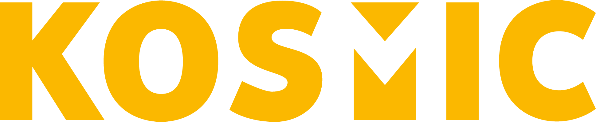

Le 10 Janvier prochain, Uptown Lovers débarquent au Club Radiant pour leur release party. Kosmic est allé à la rencontre du groupe afin d’en savoir plus sur leur dernier album, une pépite sonore douce, brute et d’une grande sincérité. Comme un rayon de soleil transperçant un ciel orageux, cet objet musical provoque des émotions fortes.…

De passage à Lyon, la rédaction est allée à la rencontre du fameux groupe Deluxe. Une moustache qu’on ne présente plus puisqu’elle est devenue une icône internationale. Après deux ans de compositions et de travail acharné, ils reviennent avec un troisième album « Boys and Girl » dont ils sont très fiers. Deluxe, c’est avant tout des…
Que les fans de « Moi Je » se rassurent ! Si le groupe a bel et bien mis un terme à son aventure, son essence a été ressuscitée sous une nouvelle forme, avec de nouvelles aspirations. Exit « Moi Je », enter « Tohu Bohu » ! La rédaction de Kosmic a rencontré les…
Les festivals n’attendent pas les beaux jours pour fleurir, le Kraspek Myzik l’a bien compris ! Pour fêter ses 10 ans, Plug & Play électrise les pentes de la Croix-Rousse. Ce festival audacieux et éclectique voit sa programmation s’étoffer un peu plus à chaque édition et divertira tes récepteurs auditifs ! Cette année 2020 est…